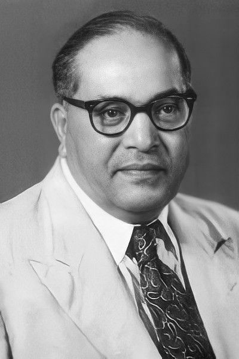

R. R. Pandayan Saheb is a distinguished Indian political leader, an ardent social activist,
and a fearless advocate for social justice. As the National President of the Rashtriya Jay
Bhim Sena Party , he has emerged as a transformative force in the struggle for equality,
empowering marginalized communities and ensuring their rightful place in Indian society.
His relentless efforts have been dedicated to uplifting Dalits, Scheduled Castes (SCs),
Scheduled Tribes (STs), and Other Backward Classes (OBCs) by championing their socio-
economic and political rights. His leadership is firmly rooted in the principles of Dr. B. R.
Ambedkar, aiming to establish a society based on justice, liberty, equality, and fraternity.
The Rashtriya Jay Bhim Sena Party, under his visionary leadership, has evolved into a
formidable political force that fights for the rights and representation of the
underprivileged. His party's core mission revolves around ensuring equal educational
opportunities, economic empowerment, legal justice, and enhanced political participation
for the historically oppressed groups. Through mass movements, protests, policy
advocacy, and legal interventions, R. R. Pandayan Saheb has consistently demonstrated
his commitment to the Ambedkarite movement.

Dr. Babasaheb Ambedkar — officially known as Dr. Bhimrao Ramji Ambedkar — was a
visionary Indian jurist, economist, social reformer, and the principal architect of the
Indian Constitution.
Framing the Indian Constitution:
As Chairman of the Constitution Drafting
Committee, Dr. Ambedkar played a crucial role in embedding values of justice,
liberty, equality, and fraternity into India’s foundational legal document.
Social Reformer:
Ambedkar was a fierce advocate for women's rights,
labor rights, and economic democracy. He fought for equal rights in education, employment,
and access to public spaces.
Father of the Indian Constitution | Social Reformer
Dr. Bhimrao Ramji Ambedkar (1891–1956), fondly known as Babasaheb Ambedkar, was a visionary leader, jurist, economist, and the chief
architect of the Indian Constitution. Born into a marginalized Dalit family, he rose through immense social adversity to become one of
India’s most powerful voices for equality, justice, and human rights.
Ambedkar dedicated his life to eradicating caste discrimination, promoting education for the oppressed, and advocating for labor rights and
women's empowerment. His leadership in movements
like the Mahad Satyagraha, Kalaram Temple Entry, and the Dalit Buddhist Movement laid the foundation for social justice in modern India.
As the first Law Minister of independent India and Chairman of the Constitution Drafting Committee, Ambedkar ensured that the Constitution
guaranteed liberty, equality, and dignity to all citizens. In 1956, in a historic act of spiritual rebellion, he embraced Buddhism, leading millions away from
caste oppression.
Today, Bhim Sena continues to carry forward his mission — to fight injustice, uplift the marginalized, and build an India where every person lives with dignity and rights.
Dr. Ambedkar dedicated his life to the emancipation of Dalits and other oppressed communities. He led various movements demanding equal rights for all,
including access to water, temples, and education. Notable among these were the Mahad Satyagraha
entry movement.
(for access to public water) and the Kalaram Temple
He founded newspapers such as Mooknayak (Leader of the Voiceless) and Bahishkrut Bharat to voice the concerns of the marginalized.
Bhim Sena (also known as Bhim Army or Bhim Sena Bharat Ekta Mission, depending on the group) is a Dalit rights organization inspired by the values
and teachings of Dr. B.R. Ambedkar .It is committed to fighting caste-based discrimination, social injustice, and ensuring equality, education, and
empowerment for marginalized communities, especially Scheduled Castes and Tribes in India.